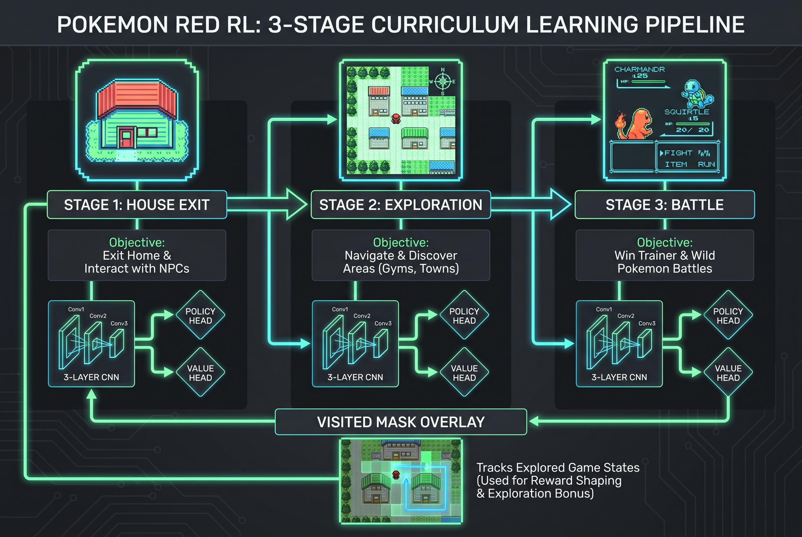
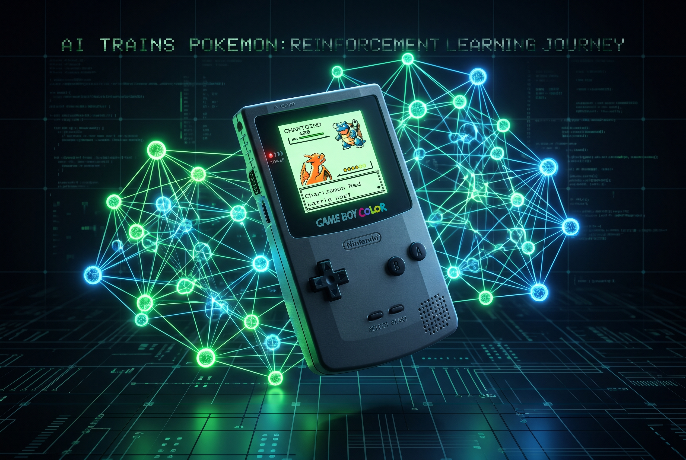

포켓몬 레드 — 강화학습의 궁극 벤치마크
포켓몬스터 레드(1996)는 단순한 게임이 아니다. 25시간 이상의 플레이타임, 희소한 보상, 부분 관측성(partial observability), 비선형 월드맵, 전투/탐험/메뉴 내비게이션이 뒤섞인 멀티태스킹. RL 관점에서 보면 Atari 게임보다 훨씬 어려운 벤치마크다.
2025년 David Rubinstein팀이 <10M 파라미터 정책으로 포켓몬 레드를 클리어하면서 이 분야가 주목받기 시작했고, 2026년 4월 Dheeraj Reddy Mudireddy가 발표한 PokeRL 논문(arXiv:2604.10812)은 초반 태스크에 초점을 맞춘 모듈형 시스템으로 진입 장벽을 크게 낮췄다.
이 글에서는 PokeRL의 아키텍처를 분석하고, 실제로 어떻게 돌리는지 레드버전 기준으로 정리한다.
핵심 프로젝트 비교
포켓몬 레드 RL 생태계에는 세 가지 주요 프로젝트가 있다.
| 프로젝트 | GitHub | 목표 | 파라미터 | 특징 |
|---|---|---|---|---|
| PokeRL (본문) | reddheeraj/PokemonRL | 초반 3태스크 | ~1M | 커리큘럼 러닝, 안티루프 |
| PokemonRedExperiments | PWhiddy/PokemonRedExperiments | 체육관 2개 클리어 | ~1.5M | 실시간 맵 시각화, V2 스크립트 |
| PokeRL (Rubinstein) | drubinstein/pokemonred_puffer | 게임 전체 클리어 | <10M | 최소 간소화, PufferLib 기반 |
PokeRL 논문 (arXiv:2604.10812)
“PokeRL: Reinforcement Learning for Pokemon Red” Dheeraj Reddy Mudireddy, 2026년 4월
포켓몬 레드의 초반 게임(집 나가기 → 태초마을 탐험 → 라이벌전 승리)을 세 단계 커리큘럼으로 나누어 학습하는 모듈형 시스템.
아키텍처: 어떻게 돌아가는가
커리큘럼 러닝 — 3단계 분해
PokeRL의 핵심 아이디어는 게임 전체를 한 번에 학습하지 않는 것이다. 대신 세 개의 독립적인 시퀀스로 분해한다.
Sequence 1: House Exit → 집에서 탈출
Sequence 2: Exploration → 태초마을 탐험, 풀숲 도달
Sequence 3: Battle → 라이벌(그린) 전투 승리
각 시퀀스는 자체 보상 함수, 세이브 상태, 학습 설정을 가진다. 이전 시퀀스의 성공이 다음 시퀀스의 시작점이 되는 구조다.
관측 공간 (Observation Space)
입력: 72×80×8 (4개 스택 프레임 × 2채널: 그레이스케일 + 방문 마스크)
↓
Conv2d(8→32, 8×8, stride=4) → ReLU
↓
Conv2d(32→64, 4×4, stride=2) → ReLU
↓
Conv2d(64→64, 3×3, stride=1) → ReLU
↓
Flatten → Linear(1920→512) → ReLU
↓
┌───────────┴───────────┐
정책 헤드 가치 헤드
(7개 액션) (상태 가치)
총 파라미터: ~1M
핵심 포인트: 관측에 visited mask (방문 마스크)가 포함된다. 에이전트가 이미 방문한 맵 타일을 시각적으로 구분할 수 있게 해주는 채널로, 탐험 효율성을 크게 높인다.
액션 공간 (Action Space)
7개의 이산 액션: No-op, Up, Down, Left, Right, A, B
프레임 스킵은 4프레임. 즉 한 액션당 4프레임이 진행된다.
안티루프 메커니즘
RL 에이전트가 포켓몬에서 가장 많이 겪는 실패 모드:
- 루프: 같은 위치를 왔다갔다
- 메뉴 스팸: A/B 버튼 반복 입력
- 배회: 목적 없이 돌아다님
PokeRL은 이를 다층 안티루프 시스템으로 해결한다:
- 위치 기반 루프 감지 (같은 좌표 반복 시 패널티)
- 액션 패턴 분석 (반복 액션 시퀀스 감지)
- 시간 기반 페널티 (일정 스텝마다 탐험 보상 감소)
계층적 보상 설계
Sequence 1 — House Exit:
이동 보상: +0.5
맵 전환: +10.0 (목표: 집 탈출)
새 위치: +0.3
루프 패널티: -0.5
Sequence 2 — Exploration:
이동 보상: +1.0
풀 도달: +20.0 (목표: 풀숲)
커리큘럼 탐험: +5.0
루프 패널티: -2.0
Sequence 3 — Battle:
공격 사용: +5.0
적 기절: +20.0
전투 승리: +50.0 (목표: 라이벌전 승리)
전투 패배: -10.0
실전 실행 가이드 (레드버전 기준)
1. 환경 설정
# 리포 클론
git clone https://github.com/reddheeraj/PokemonRL.git
cd PokemonRL
# conda 환경 생성
conda create -n pokemonred python=3.10
conda activate pokemonred
# 의존성 설치
pip install -r requirements.txt필수 의존성:
gymnasium— 환경 인터페이스stable-baselines3— PPO 구현torch— 신경망pyboy— 게임보이 에뮬레이터opencv-python— 프레임 처리numpy,tensorboard
2. ROM 준비
합법적으로 구한 포켓몬 레드 ROM을 준비한다. SHA1 체크섬으로 검증:
shasum PokemonRed.gb
# ea9bcae617fdf159b045185467ae58b2e4a48b9aROM 파일은 roms/PokemonRed.gb에 배치. roms.zip을 풀면 시퀀스별 세이브 상태도 포함되어 있다.
3. 환경 테스트
python scripts/test_env.py게임 창이 열리면서 랜덤 액션이 실행되면 성공.
4. 학습 실행
# Sequence 1: 집 탈출 (약 1시간, 성공률 70%)
python scripts/train_sequence1_house_exit.py --timesteps 500000 --envs 4
# Sequence 2: 탐험 (약 2시간, 성공률 60%)
python scripts/train_sequence2_exploration.py --timesteps 1000000 --envs 4
# Sequence 3: 전투 (약 2시간, 성공률 50%)
python scripts/train_sequence3_battle.py --timesteps 1000000 --envs 4주요 플래그:
--timesteps N— 총 학습 스텝 수--envs N— 병렬 환경 수 (메모리 부족 시 2로 감소)--headless— 디스플레이 없이 실행 (빠른 학습)--no-video— 비디오 녹화 비활성화
5. 학습된 모델 실행
# Sequence 1 감상
python scripts/play.py \
--model final_models/house_exit_20251204_112405/house_exit_20251204_112405_final.zip \
--sequence 1 --fps 60
# Sequence 2 감상
python scripts/play.py \
--model final_models/exploration_20251204_114057/exploration_20251204_114057_final.zip \
--sequence 2 --fps 60
# Sequence 3 감상
python scripts/play.py \
--model final_models/battle_20251204_120117/battle_20251204_120117_final.zip \
--sequence 3 --fps 606. 수동 조작 (디버깅용)
python scripts/manual_control.py --sequence 1
# 방문 마스크 확대 보기
python scripts/manual_control.py --sequence 2 --zoom조작키: 방향키(이동), A(A버튼), Space(B버튼), Enter(Start), Z(마스크 줌), Q/ESC(종료)
7. 학습 모니터링
tensorboard --logdir=logs
# 브라우저에서 http://localhost:6006 열기

학습 결과
| 시퀀스 | 학습 시간 | 성공률 | 비고 |
|---|---|---|---|
| House Exit | ~1시간 | 70% | 가장 안정적 |
| Exploration | ~2시간 | 60% | 맵 마스킹이 핵심 |
| Battle | ~2시간 | 50% | 가장 불안정, 수동 트리거 필요할 수 있음 |
모델이 완벽하지 않으므로, 대화 장면에서 수동으로 버튼을 눌러줘야 할 수 있다.
더 나아가기: 게임 전체 클리어
PokeRL은 초반 3개 태스크에 국한된다. 게임 전체를 클리어하려면 Rubinstein팀의 PokeRL 프레임워크(drubinstein/pokemonred_puffer)를 참고해야 한다.
이 팀은 2020년부터 2025년까지 5년간 연구한 끝에, <10M 파라미터 정책으로 포켓몬 리그 챔피언까지 클리어했다. DeepSeekV3 대비 60,500배 작은 모델이다.
핵심 기술:
- PufferLib 기반 고성능 환경 래퍼
- 메모리 주소 기반 상태 추출 (RAM reading)
- 복잡한 보상 쉐이핑 (24시간 분량의 게임플레이)
- 탐색 보상으로 KNN 대신 좌표 기반 접근
Peter Whidden의 PokemonRedExperiments도 체육관 2개까지 클리어 가능한 또 다른 좋은 출발점이다. 실시간 맵 시각화 기능이 특히 인상적이다.
프로젝트 디렉토리 구조
PokemonRL/
├── pokemon_env.py # 핵심 Gymnasium 환경
├── memory_reader.py # 게임 RAM 읽기 유틸리티
├── config/
│ ├── config.py # 기본 설정
│ ├── config_sequence1_house_exit.py
│ ├── config_sequence2_exploration.py
│ └── config_sequence3_battle.py
├── scripts/
│ ├── play.py # 학습된 에이전트 감상
│ ├── train_sequence*.py # 시퀀스별 학습 스크립트
│ ├── manual_control.py # 수동 조작
│ └── test_env.py # 환경 테스트
├── final_models/ # 사전 학습된 모델
└── roms/ # ROM + 세이브 상태
왜 포켓몬인가
JRPG는 RL 관점에서 극도로 어려운 문제다:
- 긴 호라이즌: 한 판이 25시간
- 희소 보상: 체육관 리더를 이겨야 meaningful reward
- 부분 관측: 맵이 화면에 다 안 보임
- 멀티태스킹: 탐험, 전투, 아이템 관리, 대화
- 비선형 구조: 여러 경로가 가능
이런 특성은 현실 세계의 에이전트 문제와 닮아 있다. 포켓몬 레드는 AGI 벤치마크의 좋은 프록시 역할을 할 수 있다.
라이브 예고
코난쌤 유튜브 채널에서 라이브 예정!
🎬 포켓몬 레드버전 AI로 클리어하기 (openclaw, ohmyclaw, harness)
▶️ https://youtube.com/live/NS5yEZRcOQA
참고 자료
- PokeRL 논문: arXiv:2604.10812
- PokeRL GitHub: reddheeraj/PokemonRL
- Rubinstein팀 프로젝트: drubinstein/pokemonred_puffer
- Whidden의 실험: PWhiddy/PokemonRedExperiments
- Pokemon Red via RL (논문): arXiv:2502.19920
- PyBoy 에뮬레이터: Baekalfen/PyBoy
- PokeRL 공식 사이트: drubinstein.github.io/pokerl